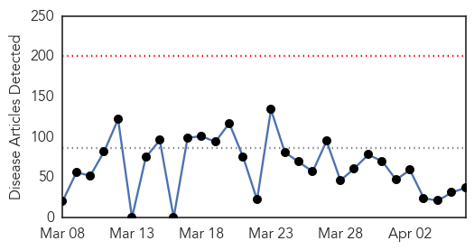
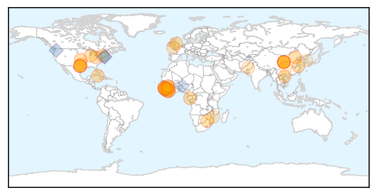

Ebola
30-Day Web Trend
0 alerts, 0 warnings

30-Day Twitter Trend
0 alerts, 0 warnings

Article Locations
Article Confidences

Top Articles:
- 1.000
- Liberia, Sierra Leone gain in Ebola crisis; Guinea struggles
- 0.999
- Baby dies of Ebola in SLeone area where outbreak started
- 0.999
- Fighting Ebola , news, Health News, AsiaOne YourHealth
- 0.999
- Liberia, Sierra Leone Gain in Ebola crisis; Guinea Struggles
- 0.999
- The Hot Zone: The Future Of Ebola Treatment Facilities
- 0.999
- chinadaily.com.cn
- 0.999
- Fighting Ebola - Xinhua
- 0.999
- S’ Leone District Records First Ebola Case in Month – Daily Times Nigerian Newspaper
- 0.997
- How Technology is Turning the Tide in Ebola
- 0.997
- Physician discusses new score for predicting Ebola risk
- 0.996
- Cuban Ebola responders depart Sierra Leone - Sierra Leone
- 0.994
- Unknown Enemy: One Year Later
- 0.994
- Deadly Ebola returns to Eastern Sierra Leone's Kailahun district
- 0.993
- Ebola-Like Outbreaks to Become More Frequent, Warns UN
- 0.992
- World warned to prepare for more Ebola-like outbreaks
- 0.975
- Dallas Hospital Seeks Dismissal of Nurse's Suit over Ebola — Naharnet
- 0.975
- Dallas hospital seeks dismissal of nurse's suit over Ebola
- 0.974
- Dallas hospital seeks dismissal of nurse's suit over Ebola
- 0.973
- Studying Ebola Survivors
- 0.969
- Sierra Leone: Cuban Ebola responders depart Sierra Leone
- 0.968
- Ebola takes worst toll on babies, other young kids
- 0.967
- I wish I could have touched Ebola patients - SA nurse
- 0.967
- Dallas hospital seeks dismissal of nurse’s suit over Ebola
- 0.926
- CDC MMWR News Synopsis for April 2, 2015
- 0.925
- Australian National University's Dr Martyn Kirk fights disease, saves lives every day
- 0.912
- Better healthcare to ease Africans' plight
- 0.880
- How tech strengthens hospital sanitization
- 0.856
- Battling nightmare infections: US CDC’s plan to beat superberbugs
- 0.820
- Woods Applauds Dutch for Support to Liberia, West Africa
- 0.746
- RFA Argus returns to Cornish waters after award-winning mission to fight Ebola in west Africa
- 0.711
- Pakistani UN Volunteer Wins Villagers’ Hearts
- 0.696
- Africare-Liberia Donates Shoes to Schools In 3 Counties
- 0.657
- Ebola Suits Make People Look Scary. So This L.A. Artist Had an Idea
- 0.647
- Ebola, Superbugs and the New Epidemics of the 21st Century to be Addressed at Husson Lecture
- 0.623
- At the front line of battle against disease[1]- Chinadaily.com.cn
- 0.524
- Iron Knights: Mission to Liberia a huge success, said officer who commanded Fort Bliss contingent
- 0.506
- Inovio Pharmaceuticals wins DARPA grant for Ebola vaccine
Top Tweets:
- 0.923
- Dallas hospital seeks dismissal of nurse's suit over Ebola - Fox News http://t.co/6TZpNmvOXF ebola EVD
- 0.824
- RT: There is urgent need for ppl w/ healthcare & public health experience, French fluency to fight Ebola in Guinea. http://t…
- 0.821
- Why Do Sierra Leonean and American Clinicians With Ebola Get Such Different ... - Slate Magazine http://t.co/FtsTcBK2yM ebola EVD
- 0.760
- An Ebola doctor's answer to life-or-death question of who to admit for treatment - Washington Post http://t.co/VkDXr4iehV ebola EVD
- 0.718
- RT: Printing thousands of Ebola health posters ft & @YayaToure for Guinea w/ @AlliedPrinting! http://t.c…
- 0.691
- Houston scientist hatches plan to prevent next Ebola - Houston Chronicle http://t.co/PxvolMk4q9 ebola EVD
- 0.669
- RT: RT: At start of outbreak in W Africa, only 1 US lab was testing for Ebola; now there are 56 labs: ZeroCases http:/…
- 0.643
- Staying vigilant against Ebola - International Federation of Red Cross and Red Crescent Societies http://t.co/EJKPccVA6T ebola EVD
- 0.578
- RT: All but 1 county of Liberia have now gone >'er than 42 dys w/out new Ebola cases. One case in Monrovia, died. http://…
- 0.521
- RT: We cannot prevent future epidemics like Ebola without community health workers. They are the front lines of resilience. Health…
Measles
30-Day Web Trend
0 alerts, 0 warnings

30-Day Twitter Trend
4 alerts, 0 warnings

Article Locations

Article Confidences
Top Articles:
- 0.882
- Measles outbreak prompts hundreds on Peninsula to take their best shot -- Port Angeles Port Townsend Sequim Forks Jefferson County Clallam County Olympic Peninsula Daily NEWS
- 0.862
- State Health Department helps protect the public
- 0.862
- WHO helps North Korea battle measles outbreak
- 0.564
- WHO targets about 35, 000 children for vaccination
Top Tweets:
-
No tweets found for Apr 06, 2015